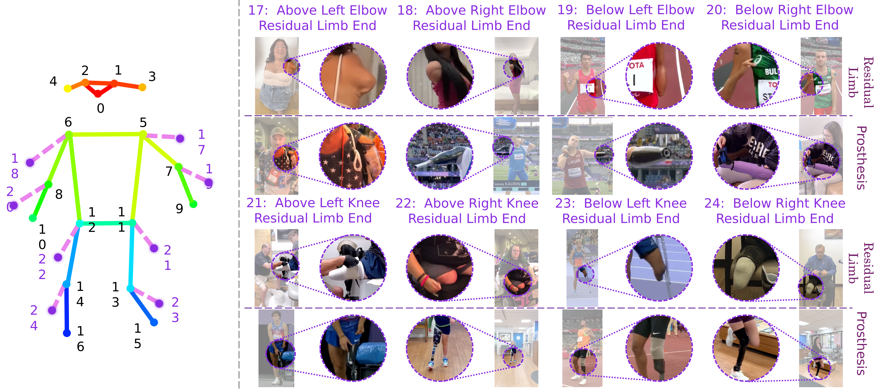

Necessity of Specialized Human Body Keypoint Schema
Standard keypoint schemas like COCO and MPII are designed for able-bodied individuals and lack the necessary annotations for people with limb deficiencies. Our specialized schema addresses this gap by including:
- Residual-limb end keypoints
- Prosthetic joint markers
- Adaptive connections for various amputation levels
Keypoint Schema Design
Our keypoint schema includes 17 standard body joints plus 8 additional keypoints specifically for residual limbs and prosthetics:

Figure 1: Our extended keypoint schema including residual limb markers
Standard Keypoints (17)
- Head (nose, eyes, ears)
- Shoulders, elbows, wrists
- Hips, knees, ankles
- Neck, pelvis
Additional Keypoints (8)
- Residual limb end points (4)
- Prosthetic joint markers (4)
Implementation Details
Our schema is implemented with the following considerations:
- Backward compatibility with existing models
- Flexible to accommodate various amputation types
- Clear documentation for annotators
- Validation protocols for annotation quality